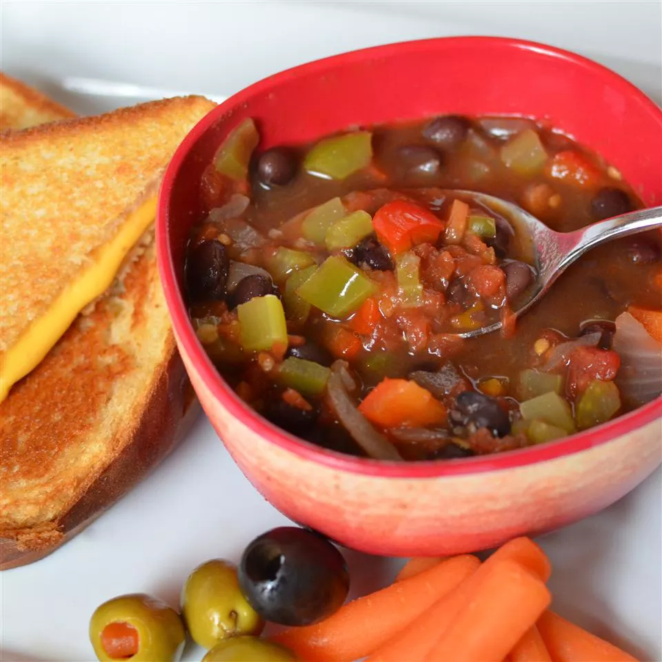

Easy Vegan Black Bean Soup

Delicous vegan meal soup recipe
Ingredients
- 2 tablespoons olive oil
- 1 onion, diced
- 1 green bell pepper, diced
- 2 stalks celery
- 1 large carrot, diced
- 2 cloves garlic
- 2 cans black beans, drained
- 1 can diced tomatoes
- 1 cup water
- 1 teaspoon cumin
Directions:
- Heat olive oil in a stockpot over medium-high heat; saute onion, green bell pepper, celery, carrot, and garlic until onion is translucent, about 5 minutes. Add black beans, diced tomatoes, water, and cumin to onion mixture; bring to a boil. Reduce heat to medium-low and simmer until flavors have combined, at least 20 minutes.
Home